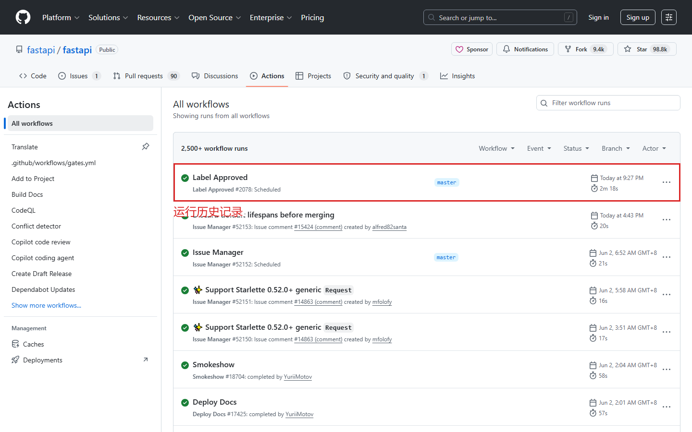

第十一课：Actions / CI（下）— 阅读运行日志
时长：25 分钟 | 前置：第十课 | P0 词条：13 个 | 覆盖 UI 元素：12 个
学习目标
学完这节课，你能：
- 在 Actions 标签查看 Workflow 运行历史
- 展开 Job 和 Step 查看详细日志
- 排查 CI 失败的常见原因
- 使用 Re-run jobs 重新运行失败的 Job
- 给 README 添加 CI Badge（状态徽章）
0. 开场（1 min）
画面：Actions 标签页

旁白：
"上节课我们学会了怎么配置 CI。但 CI 最大的价值不是配置，而是看懂运行结果。
这节课我们学怎么读 Actions 的日志、CI 失败怎么排查、以及怎么给你的仓库加一个 CI 通过的小绿标。"
1. Actions 标签页（4 min）
画面：仓库 → Actions 标签
1.1 Actions 主页面
| 元素 | 英文 | 说明 |
|---|---|---|
| 左侧面板 | Actions / Workflows | 列出所有 Workflow 的名称 |
| 右侧主区域 | 运行历史列表 | 每个 Workflow 的最近运行 |
| 每个条目 | 标题 + 触发条件 + 时间 + 状态图标 | 一眼看到 CI 状态 |
1.2 一个运行条目的信息
| 元素 | 说明 |
|---|---|
| 标题 | 通常是 commit message |
| 下方灰色文字 | 哪个分支 / 谁触发的 / 什么时候 |
| 状态图标 | ✅ Passed / ❌ Failed / 🟡 In progress |
| 右侧 | 运行持续时间 |
| 行尾 ... 菜单 | Re-run / Cancel / Delete workflow run 等 |
1.3 Workflow 列表（左侧）
| 元素 | 说明 |
|---|---|
| All workflows | 展示所有 Workflow 的运行历史（混在一起） |
| 每个 Workflow 名 | 只展示该 Workflow 的运行历史 |
| Workflow 名旁的数字 | 该 Workflow 的失败次数（近期） |
2. 查看单次运行详情（6 min）
画面：点击一次运行
2.1 运行详情页面布局
| 区域 | 说明 |
|---|---|
| 顶部 | Workflow 名称 + 运行标题 |
| 下方 | 触发的 commit 信息（SHA、message、作者） |
| 左侧 | 所有 Job 的状态列表 |
| 右侧/下方 | 详细的运行日志 |
2.2 Job 列表解读
| 元素 | 说明 |
|---|---|
| Job 名称（如 lint / test） | 和 Workflow YAML 里定义的一致 |
| 状态图标 | ✅ / ❌ / 🟡 |
| 耗时 | 每个 Job 跑了多久 |
| Job 之间的线条 | 表示依赖关系（谁等谁完成） |
操作演示：
【录屏】点进一次运行 → 看到 Job 列表 → 指状态图标 → 指依赖线 → "lint 和 test 是并行的，type-check 等 test 完成才跑"
2.3 展开单个 Job
| 操作 | 效果 |
|---|---|
| 点 Job 名称 | 展开该 Job 的所有 Step |
| 每个 Step | 显示名称（或命令）、状态、耗时 |
| 点 Step | 展开该 Step 的完整日志 |
2.4 Step 日志
| 元素 | 说明 |
|---|---|
| 绿色文本 | 命令以 Run npm test 形式回显 |
| 白色文本 | 命令的输出 |
| 红色文本 | 错误信息 |
| 展开按钮 | 默认折叠，点击展开完整日志 |
操作演示：
【录屏】展开 Job → 展开 Step → 逐行读日志 → "白色是正常输出，红色是错误信息"
3. CI 失败排查实战（5 min）
3.1 常见 CI 失败原因速查
| 报错信息 | 原因 | 怎么修 |
|---|---|---|
npm: command not found |
忘了 setup-node | Workflow 里加 uses: actions/setup-node@v4 |
Module not found: ... |
忘记 npm install |
Workflow 加 run: npm install |
Cannot find module ... |
缺少依赖 | 检查 package.json，确认依赖都列了 |
Error: connect ECONNREFUSED |
连不上外网 | 检查网络 / 是否需要 VPN |
Test failed: timeout |
测试超时 | 增加测试超时时间 |
Permission denied |
权限不足 | 可能需要 sudo |
No such file or directory |
路径写错了 | 检查相对路径 |
| CI 一直黄色转圈 | 在排队等资源 | 等一会儿就好（免费版有并发限制） |
3.2 排查步骤
| 步骤 | 操作 |
|---|---|
| 1 | 点开失败的 Job → 看哪个 Step 标了 ❌ |
| 2 | 展开该 Step → 看红色报错文字 |
| 3 | 搜索报错信息（通常复制第一行就够） |
| 4 | 在本地复现（试试同样的命令在本地能不能跑通） |
| 5 | 修改 Workflow 或代码 → push → 自动重跑 |
操作演示：
【录屏】展示一个失败的 CI → 点开失败 Step → 读报错信息 → 定位问题 → "这里
npm run build失败了，因为有个 TypeScript 编译错误"
4. 手动操作（4 min）
4.1 Re-run jobs（重新运行）
| 操作 | 作用 |
|---|---|
| Run 页面右上角 Re-run jobs | 重新运行 |
| Re-run all jobs | 重新运行所有 Job |
| Re-run failed jobs | 只重跑失败的那些 |
| 什么时候用 | 1. 修改了代码后 2. CI 因为临时原因失败（网络、超时） |
4.2 Cancel workflow（取消运行）
| 操作 | 作用 |
|---|---|
| Run 页面右上角 Cancel workflow | 取消当前运行 |
| 什么时候用 | 发现 Push 了错误代码 → 取消 CI 避免浪费时间 |
4.3 手动触发 Workflow
| 条件 | 操作 |
|---|---|
Workflow 里要有 workflow_dispatch: |
YAML 的 on 里加上这个 |
| 然后进入 Actions → 选 Workflow → Run workflow | 手动触发 |
| 可以传参数 | 比如选分支、输入版本号 |
5. CI Badge（状态徽章）（3 min）
画面：展示一个仓库 README 中的 CI Badge
5.1 什么是 Badge
| 概念 | 说明 |
|---|---|
| Badge | 一个 SVG 小图标，显示 CI 当前状态 |
| 作用 | 放在 README 里，访客一眼看到项目 CI 是绿的还是红的 |
| 示例 |  |
5.2 怎么获取 Badge URL
| 步骤 | 操作 |
|---|---|
| 1 | 进入 Actions 标签 → 选你的 Workflow |
| 2 | 点右上角 ... 菜单 → Create status badge |
| 3 | 复制 Markdown 格式的链接 |
| 4 | 粘贴到 README.md 的顶部 |
| 5 | 提交 README → 看到 Badge 显示出来 |
操作演示：
【录屏】Actions → ... → Create status badge → 复制 → 打开 README.md → 粘贴 → 预览
6. 常用 Workflow 模板（2 min）
6.1 Node.js 项目 CI 模板
name: CI
on: [push, pull_request]
jobs:
build:
runs-on: ubuntu-latest
strategy:
matrix:
node-version: [18, 20, 22]
steps:
- uses: actions/checkout@v4
- uses: actions/setup-node@v4
with:
node-version: ${{ matrix.node-version }}
- run: npm ci
- run: npm test
matrix可以在多个 Node.js 版本上同时跑测试。
6.2 Python 项目 CI 模板
name: CI
on: [push, pull_request]
jobs:
test:
runs-on: ubuntu-latest
steps:
- uses: actions/checkout@v4
- uses: actions/setup-python@v5
with:
python-version: "3.12"
- run: pip install -r requirements.txt
- run: pytest
课后作业
- 跑到 Actions 标签看你的 Workflow 运行历史
- 故意写一个会失败的测试 → Push → 看 Actions 日志里怎么显示的
- 用 Re-run failed jobs 重新跑失败的 Job
- 给你的仓库加一个 CI Badge 到 README
- 在 Workflow YAML 里加
workflow_dispatch→ 手动触发一次
本课术语速查
{.glossary-table}
| 英文 | 中文 | 出现位置 |
|---|---|---|
| Actions | 自动化 | 顶部标签 |
| Workflow | 工作流 | 左侧面板列表 |
| Run history | 运行历史 | Actions 主页面 |
| In progress | 运行中 | 状态之一 |
| Passed / Failed | 通过 / 失败 | 状态图标 |
| Job | 任务 | 运行详情页左侧 |
| Step | 步骤 | Job 展开后的子项 |
| Logs | 日志 | Step 展开后的文本输出 |
| Re-run jobs | 重新运行 | 运行页右上角 |
| Cancel workflow | 取消运行 | 运行页右上角 |
| workflow_dispatch | 手动触发 | on 触发条件之一 |
| Badge | 状态徽章 | README 中的 SVG 图标 |
| Matrix | 矩阵（多版本并行测试） | strategy.matrix |